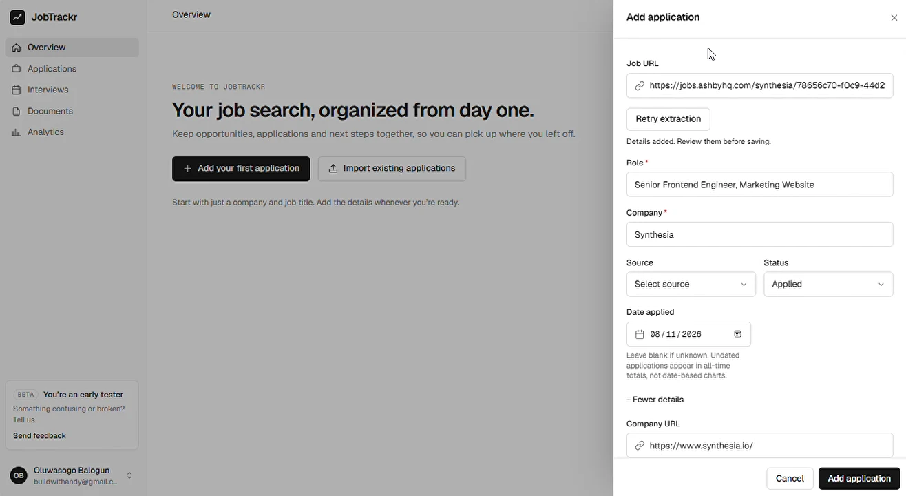

Building Job URL Extraction into JobTrackr
How a small improvement to adding job applications turned into a series of product decisions, engineering challenges, and lessons from shipping.
One thing I’ve been intentional about with JobTrackr is making the experience of tracking job applications as straightforward as possible.
Adding an application was already pretty simple. You only needed two fields: the job role and the company. Everything else was optional.
But there was something I kept thinking about.
Most times, when you’re adding an application to a tracker, you already have the job posting open somewhere. The role, company, location, description, and other details are right there.
Yet you’re still copying information from one place to another.
It wasn’t a particularly difficult process, but I felt it could be more seamless.
And I wasn’t the only one who thought so. Feedback from a few early JobTrackr users reinforced that feeling.
So I started thinking: what if you could just paste the job posting URL and let JobTrackr retrieve whatever information was available?
You’d still review everything before saving. You just wouldn’t have to start from scratch every time.
That was the idea.
Building it, however, came with a few more considerations than I initially expected.
Making the URL do some of the work
I wanted the feature to fit naturally into the existing application form rather than introduce another workflow.
The experience I had in mind was simple.
Paste a job URL, let JobTrackr retrieve the relevant details, review or correct whatever comes back, and save when you’re ready.
If extraction doesn’t work, you can still enter the information yourself.
One thing I was particular about was keeping the user in control.
An extracted job title might not be the title someone wants to use in their tracker. A company might appear under a different name on the job board. Some fields might be missing altogether.
So I didn’t want extraction to automatically create an application or make decisions on someone’s behalf.
It needed to assist, not take over.
That decision shaped quite a bit of the implementation.

Pasting a job URL, reviewing the details, then adding the application
Recorded on jobtrackr.site with a test account and a public job posting. Nothing is saved until Add application is pressed.